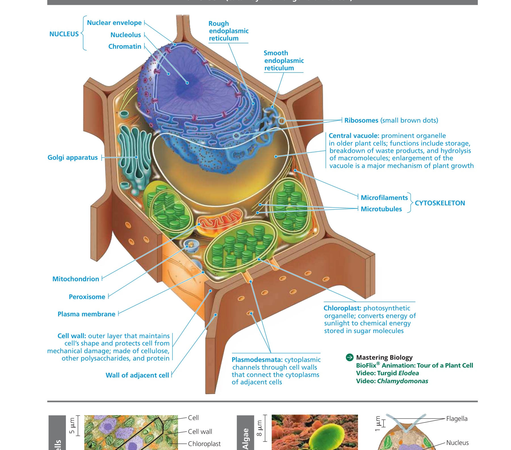
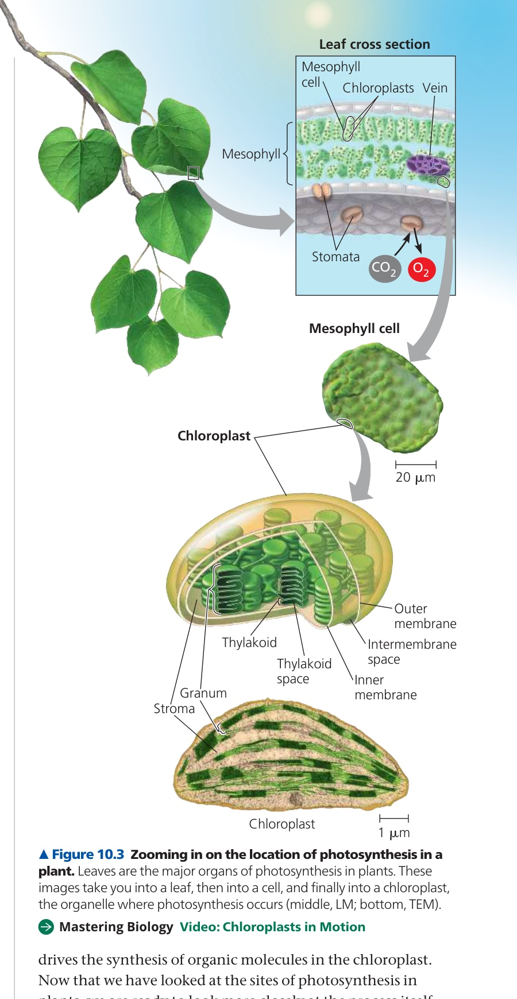
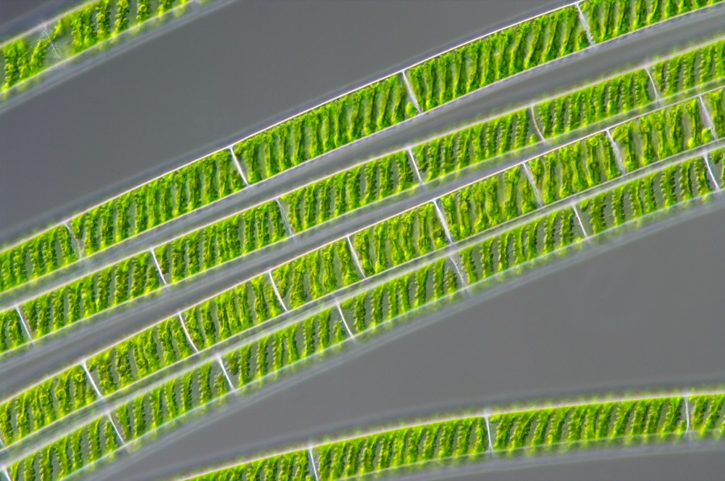
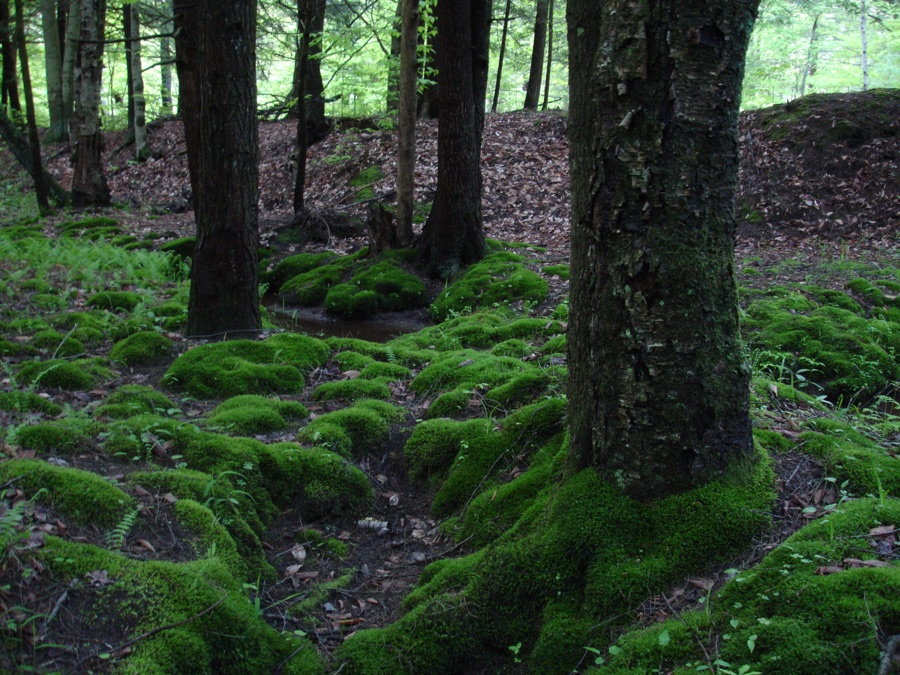
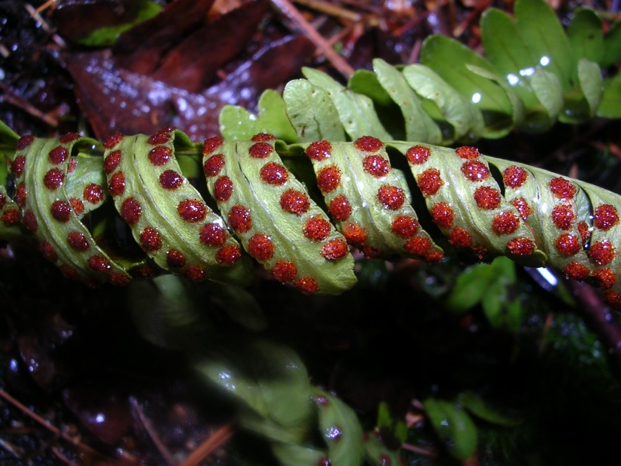

Test 1: Cell Structure, Photosynthesis & Plant Origins
12 questions · covers Isaac's Week 1–2 material and Alice's Week 1 material · click an answer to check it
Question 1 of 12
Look at the labeled plant cell diagram below. Which structure is found in this cell but would NOT be found in a typical animal cell?

Golgi apparatus
Mitochondrion
Central vacuole
Nucleus
Plant cells have a large central vacuole that handles storage, waste breakdown, and — by enlarging — drives most plant cell growth. Animal cells may have small vacuoles but nothing like this. Golgi, mitochondria, and nuclei are found in both plant and animal cells.
Source: Campbell Biology 12e, Figure 6.8 (study guide p. 4)
Question 2 of 12
In the same diagram, which structure is described as protecting the cell from mechanical damage and is made of cellulose?
Plasma membrane
Cell wall
Central vacuole
Golgi apparatus
The cell wall is the rigid outer layer made of cellulose (plus other polysaccharides and protein) that gives plant cells their shape and structural protection. It sits outside the plasma membrane.
Source: Campbell Biology 12e, Figure 6.8 (study guide p. 4)
Question 3 of 12
The diagram shows small channels connecting the cytoplasm of neighboring plant cells through their shared cell wall. What are these called?
Stomata
Plasmodesmata
Ribosomes
Microtubules
Plasmodesmata are cytoplasmic channels through the cell wall that connect adjacent plant cells, letting water, nutrients, and signals pass directly between cells. Don't confuse with stomata, which are pores in the leaf epidermis for gas exchange.
Source: Campbell Biology 12e, Figure 6.8 (study guide p. 4)
Question 4 of 12
Based on the diagram below, CO₂ enters and O₂ exits the leaf through small pores in the epidermis called:

Mesophyll
Stomata
Grana
Stroma
Stomata (singular: stoma) are the pores in the leaf's lower epidermis that let CO₂ in and O₂ out. The mesophyll is the internal leaf tissue where most chloroplasts live — it's not the pore itself.
Source: Campbell Biology 12e, Figure 10.3 (study guide p. 32)
Question 5 of 12
In the same diagram, a stack of thylakoid membranes (like a stack of coins) is called a single "thylakoid," but the whole stack together is called a:
Stroma
Granum
Cristae
Matrix
A stack of thylakoids is a granum (plural: grana). The stroma is the fluid surrounding the grana, inside the chloroplast's inner membrane — that's where the Calvin cycle happens. (Cristae and matrix are mitochondria terms, not chloroplast terms — a classic mix-up.)
Source: Campbell Biology 12e, Figure 10.3 (study guide p. 32)
Question 6 of 12
Where in the chloroplast do the light reactions take place, and where does the Calvin cycle take place?
Light reactions in the stroma; Calvin cycle in the thylakoid membrane
Light reactions in the thylakoid membrane; Calvin cycle in the stroma
Both take place in the stroma
Both take place in the thylakoid membrane
The light reactions happen in the thylakoid membrane, where chlorophyll captures light energy to make ATP and NADPH. The Calvin cycle then uses that ATP/NADPH in the stroma to fix CO₂ into sugar. This structure/function link is one of the most commonly tested photosynthesis facts.
Source: Campbell Biology 12e, Concepts 10.3–10.4 (study guide pp. 33–45)
Question 7 of 12
A corn plant (a C4 plant) and a cactus (a CAM plant) both evolved alternative carbon-fixation strategies to reduce water loss and photorespiration in hot, dry climates. What is the key difference between the two strategies?
C4 plants separate initial CO₂ fixation and the Calvin cycle in space (different cell types); CAM plants separate them in time (fixing CO₂ at night, running the Calvin cycle by day)
C4 plants only photosynthesize at night; CAM plants only during the day
They are the same process with two different names
CAM plants don't use the Calvin cycle at all
C4 plants (corn, sugarcane) physically separate the two steps into mesophyll cells and bundle-sheath cells. CAM plants (cacti, pineapple) keep CO₂ fixation and the Calvin cycle in the same cells but run them at different times of day — opening stomata only at night to minimize water loss.
Source: Campbell Biology 12e, Concept 10.5 (study guide pp. 47–49)
Question 8 of 12
This is a real photomicrograph of a common freshwater organism. Note the spiral ribbon-shaped structures inside each cell — those are its chloroplasts. It has no true roots, stems, or leaves. What is this organism's group, and how does it relate to land plants?

A green alga — green algae are the closest living relatives of land plants
A moss — an early land plant
A fungus, unrelated to plants
A fern gametophyte
This is Spirogyra, a filamentous green alga, identifiable by its distinctive spiral chloroplasts. Green algae share several key traits with land plants (chlorophyll a & b, cell walls, starch storage) and are considered plants' closest living relatives — but algae lack the adaptations for life on land (cuticle, stomata, protected embryos) that define true plants.
Photo: Wiedehopf20, Wikimedia Commons, CC BY-SA 4.0
Question 9 of 12
This photo shows moss carpeting a forest floor and growing up the base of tree trunks. Mosses are bryophytes — nonvascular plants. What does "nonvascular" mean, and why does it explain moss's low, mat-like growth habit?

They lack xylem and phloem, so they can't transport water and nutrients efficiently over long distances — limiting how tall they can grow
They have vascular tissue but simply prefer growing low to the ground
"Nonvascular" means they aren't classified as true plants at all
They lack chlorophyll and cannot photosynthesize
Mosses lack xylem (water transport) and phloem (sugar transport), the vascular tissues that let taller plants move resources far from the soil. Without them, mosses must stay small and rely on water diffusing cell-to-cell — which is also why they thrive in moist, shaded spots like this one.
Photo: IvoShandor, Wikimedia Commons, CC BY 2.5
Question 10 of 12
This close-up shows a curled fern frond with clusters of reddish-brown dots on its underside. What are these structures, and what do they do?

Sori — clusters of sporangia that produce and release spores
Stomata — pores used for gas exchange
Galls caused by insect damage
Flowers
These are sori (singular: sorus) — clusters of sporangia, the spore-producing structures on the underside of fertile fern fronds. Ferns are seedless vascular plants, so spores (not seeds) are how they disperse and reproduce.
Photo: Wikimedia Commons, CC BY-SA 3.0
Question 11 of 12
Ferns are described as "seedless vascular plants" — the first plants to grow tall. What does having vascular tissue (unlike mosses) allow ferns to do?
Transport water and nutrients efficiently over longer distances, supporting greater height
Photosynthesize using a completely different pigment than other plants
Reproduce entirely without spores
Grow without needing sunlight
Vascular tissue (xylem + phloem) is the key innovation that let plants grow tall — it moves water/minerals up from roots and sugars from leaves to the rest of the plant. That's why ferns can tower over mosses even though neither group produces seeds.
Source: Campbell Biology 12e, Concept 29.3 (study guide pp. 94–97)
Question 12 of 12
Algae like Spirogyra photosynthesize and are closely related to plants — but they are NOT classified in Kingdom Plantae. Why not?
They lack the derived traits shared by all land plants, such as a waxy cuticle, stomata, and a multicellular embryo retained/protected within the parent
They don't contain chlorophyll
They are heterotrophic (can't make their own food)
Their cell walls are made of chitin, like fungi
Land plants (Kingdom Plantae) are defined by shared derived traits evolved for life on land: a protective cuticle, stomata for gas exchange, and — most distinctively — retaining and nourishing the embryo inside the parent plant. Algae photosynthesize and share an ancestor with plants, but never evolved these land adaptations.
Source: Campbell Biology 12e, Concept 29.1 (study guide p. 82)